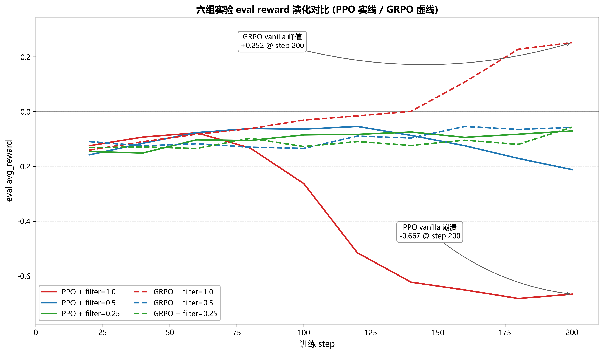
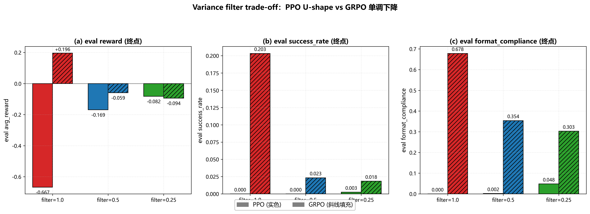
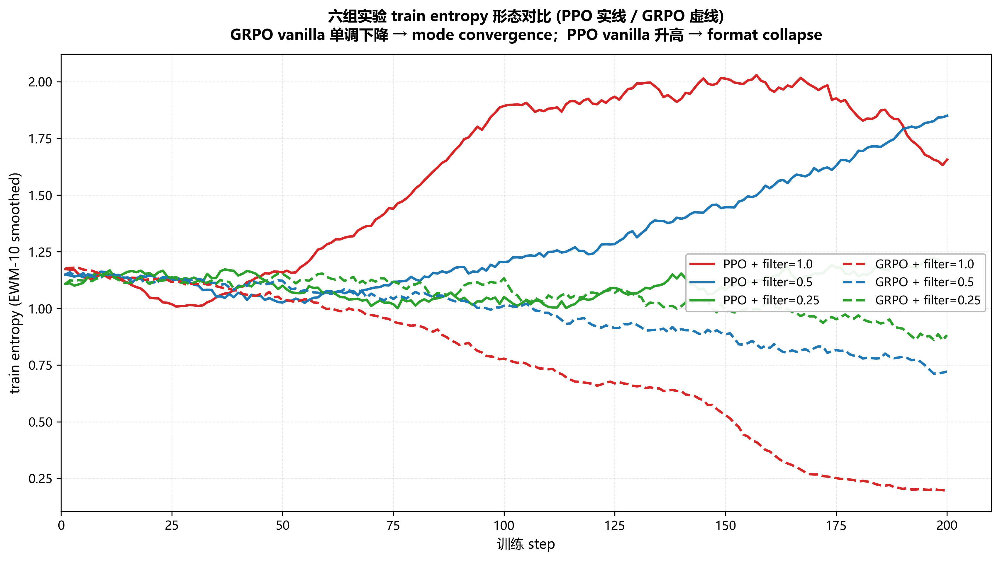
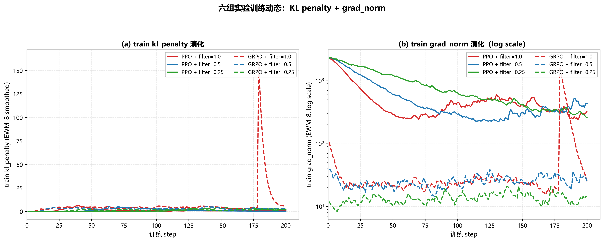
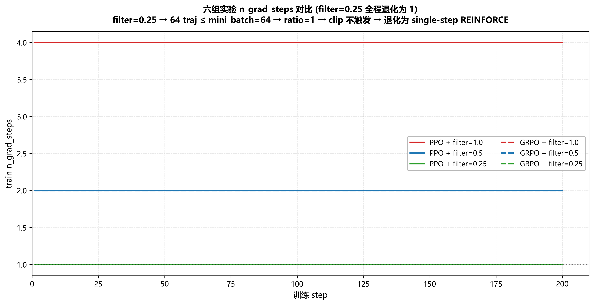
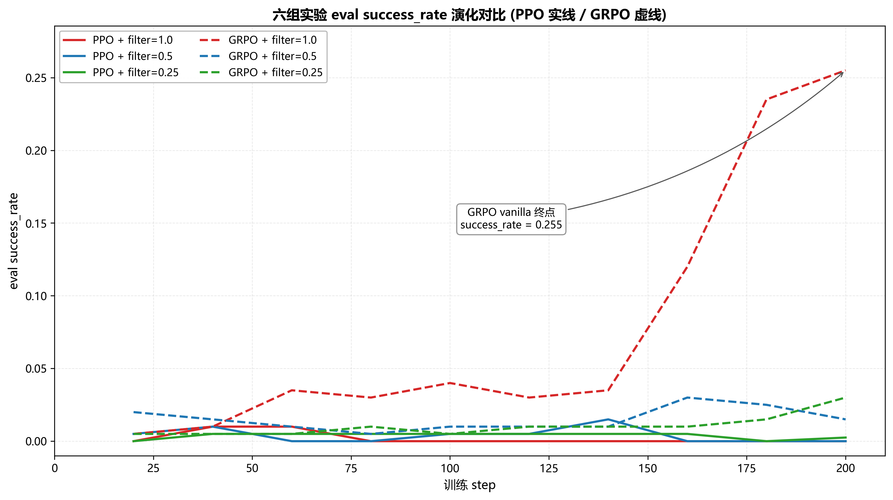
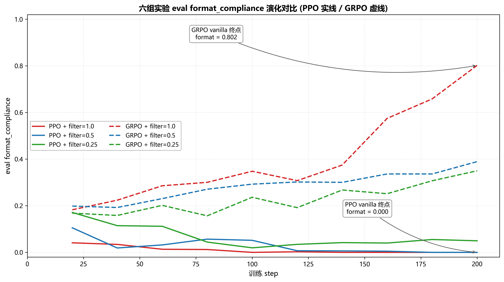
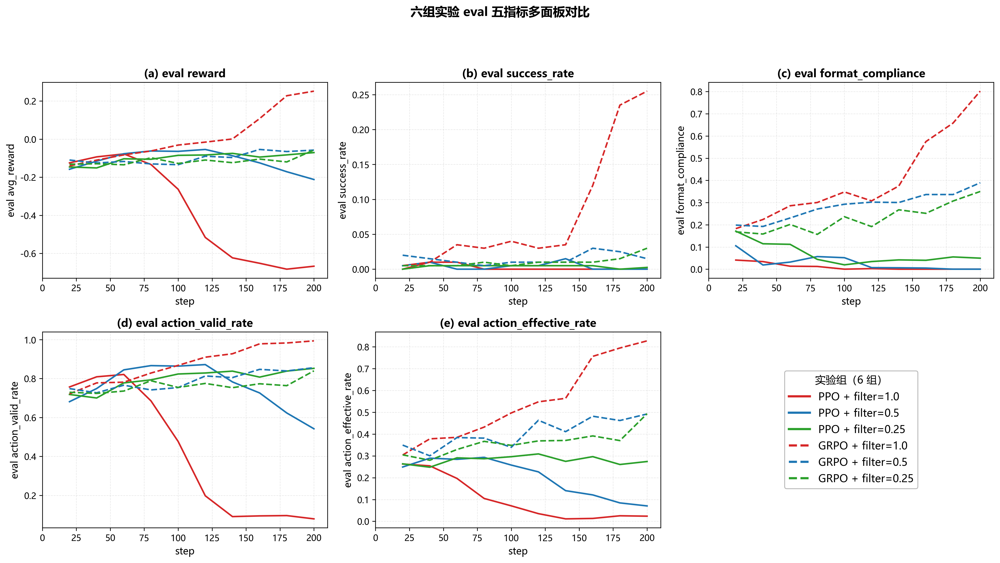
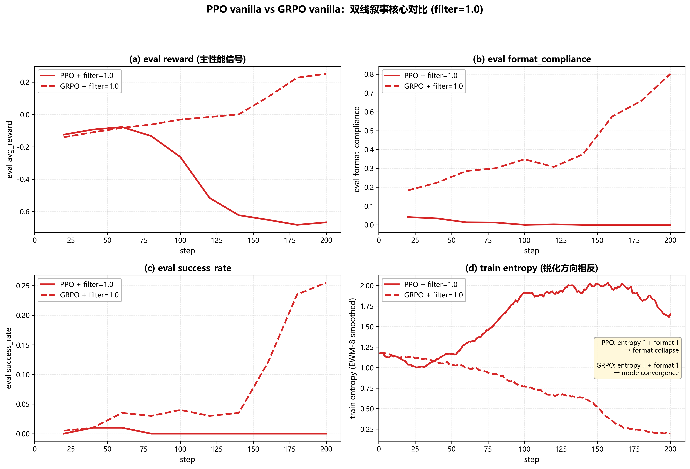
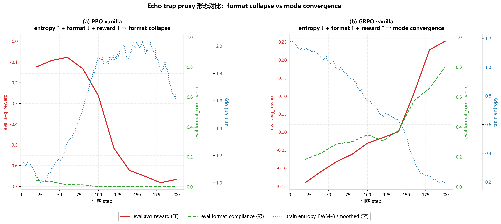

RAGEN-Ward
消费级硬件下的 LLM Agent 多轮强化学习复现与算法适用性边界研究
基于 RAGEN [1] 的解耦重写、消费级硬件（NVIDIA RTX 4070 8GB）下的 6 组完整实验，以及 PPO 方向性复现 + GRPO 反向复现的算法适用性边界发现。
摘要
本研究以 RAGEN [1] 为参照，在单张 NVIDIA RTX 4070（8 GB VRAM）的消费级硬件 + 纯 Windows 软件栈下，系统性复现了多轮交互冰湖（FrozenLake）环境上的 LLM Agent 强化学习训练流程。研究产出两条互相佐证的贡献：
- 工程贡献（C1）：将原 RAGEN 仓库严格解耦为 5 个可插拔模块，并构建了一套面向 8 GB VRAM 的硬件优化栈（涵盖 8-bit Adam 量化 [9]、梯度检查点 + KV cache 修复、reference 模型禁检查点、batched rollout 协议、alive-only 批次收缩等共 13 项优化），相比论文 fp32 baseline 节省 6–8 GB 显存，让 0.5B 模型能在 8 GB 卡上完成完整 200 步训练。
- 研究贡献（C2）：在 PPO [2] × GRPO [5] ×
variance_filter_ratio∈ {1.0, 0.5, 0.25} 的 6 组完整实验矩阵上，方向性复现了论文关于 vanilla 不稳定性、StarPO-S 修复、filter trade-off 三大论点（PPO 维度），同时发现一组 反向复现——GRPO 三组的所有论点完全反向：vanilla GRPO 是 6 组里唯一接近论文 0.5B baseline 水平的实验（success_rate = 22.5% / format_compliance = 80.8% / final reward = +0.225），而 variance filter 越激进性能越差。本研究通过三层机制根因分析（critic 数据增强 / z-score 不变性 / PPO-Clip 退化共享）揭示了 variance-based rollout filter 是为 PPO with critic 设计的稳定化机制，不直接迁移到 actor-only 的 GRPO——这是论文未明确讨论的算法适用性边界。
本报告共 7 章 + 附录，对应工程贡献（第 3 章）、实验设置（第 4 章）与双线叙事的实验结果（第 5 章）。
1引言
1.1研究背景
随着大语言模型 (LLM) 能力的持续提升，将 LLM 作为可执行 agent 嵌入多轮交互环境、并通过强化学习 (RL) 持续优化其策略，已成为后训练领域的重要研究方向。相比单轮的 RLHF [7] / DPO [6]，agent 任务具有三个显著挑战：
- 多轮 horizon——一条 trajectory 由若干 turn 组成，每个 turn 内 LLM 输出包含
<think>与<answer>两段，环境只在 turn 边界给出反馈； - 部分可观测——LLM 看到的 observation 是文本化的局部状态，需要长 context 维护历史；
- 稀疏奖励——多数 turn 的即时 reward 为 0，只在 trajectory 末端获得 ±1 的 outcome reward。
针对上述三个挑战，Wang et al. (2025) 提出的 RAGEN [1] 是首个系统化、跨多环境、跨多算法地研究 LLM agent multi-turn RL 的框架。RAGEN 的核心贡献包括：（a）一套统一的"State-Thinking-Actions-Reward Policy Optimization" (StarPO) 训练框架；（b）针对多轮 agent 的 bi-level GAE（turn-level + token-level 双层 generalized advantage estimation [3]）；（c）针对 vanilla StarPO 在小模型上观察到的训练不稳定性提出的 StarPO-S 修复机制（基于 trajectory reward variance 的 rollout filtering）；（d）覆盖 5 种代表性环境（FrozenLake / Sokoban / CartPole / Bandit / Math-Countdown）的完整实验体系。
RAGEN 论文的实验在多卡服务器（A100 / H100 级别）上完成，使用 fp32 AdamW + vLLM-backed rollout 引擎，每组实验包含多 seed 平均。这一硬件 / 软件栈对小型科研团队与个人项目构成显著门槛。
1.2复现的实际困难
本研究是对 RAGEN 论文的一次复现 + 重写 + 适用性扩展，但本研究实际可用的硬件与软件资源远低于论文设定：
- 硬件：单张 NVIDIA GeForce RTX 4070，VRAM 仅 8 GB；CPU + 系统内存中等水平；
- 操作系统：Windows 11，无 vLLM 官方支持，无法直接复用论文的 rollout 引擎。
在以上约束下，要"原汁原味"地复现 RAGEN 论文是不现实的。本研究因此走了一条 "严格解耦 + 硬件适配 + 受控变量" 的路线，把研究目标重新定义为：（i）把论文公开仓库重写为一套可插拔、模块独立、易于扩展的研究框架（工程贡献 C1）；（ii）在 8 GB 硬件让步下，方向性复现论文的核心论点，并在论文未明确讨论的算法 × filter 二维上获得新的发现（研究贡献 C2）。
1.3本研究的两条贡献
下图给出本研究两条贡献的结构与互相佐证关系：
5 模块设计"] A2["硬件优化栈
13 项优化"] end subgraph C2["🔬 研究贡献 C2"] direction TB B1["PPO 三组
方向性复现"] B2["GRPO 三组
反向复现"] B3["三层机制
根因解释"] end C1 -->|使 6 组实验
得以执行| C2 C2 -->|为 adamw8bit
提供 controlled 旁证| C1 style C1 fill:#fef1d8,stroke:#b95c2e,stroke-width:2px style C2 fill:#ecf6ee,stroke:#4a8a5b,stroke-width:2px
C1 工程线：解耦 + 消费级硬件优化栈
把原 RAGEN 仓库严格解耦为 5 个模块：环境层、agent 层、RL 算法层、训练循环层、评估层。每一层都有明确的输入输出契约，可以独立替换或扩展（例如把 PPO 替换成 GRPO 只需要切换 RL 算法层，不影响其他模块）。
在此基础上，针对 8 GB VRAM 这一极端约束，构建了一套涵盖 13 项的硬件优化栈，相比论文 fp32 baseline 节省 6–8 GB VRAM 峰值。其中两项最值得强调的工程亮点是：
- KV cache 修复：HuggingFace 在启用
gradient_checkpointing时会全局把use_cache=False，导致 rollout 阶段的 autoregressive decode 退化为 O(L²) 复杂度。本研究通过显式恢复 cache + train/eval 状态切换的双重修复，把 rollout 速度提升 3–10 倍。 - Batched rollout 协议：在纯 PyTorch 的 Windows 环境下（无 vLLM）实现了"每 turn 凑 batch、提前 done 的 trajectory 立即退出 batch"的 alive-only 批次收缩协议，使 rollout 吞吐量提升 3–5 倍。
这套优化栈是 6 组完整实验能在消费级单卡上跑通的工程基础。
C2 研究线：6 组实验 + 反向复现
在 PPO × GRPO × variance_filter_ratio ∈ {1.0, 0.5, 0.25} 的 2 × 3 = 6 组完整实验矩阵上，本研究获得了如下核心发现：
- PPO 三组方向性复现论文：vanilla PPO 在 step 100 附近开始崩溃（最终 reward 从初始 -0.10 跌至 -0.65，恶化 6.5×）；StarPO-S 中度过滤 (filter=0.5) 把崩溃推迟约 60–80 步并降低损失约 71%；filter trade-off 呈 U-shape，0.5 是 sweet spot。
- GRPO 三组完全反向：vanilla GRPO 是全部 6 组里 唯一展现持续学习 的实验，最终 reward = +0.225（success_rate = 22.5%、format_compliance = 80.8%），方向性达到论文 0.5B baseline 的下界；filter 越激进、性能越差，呈反向 U-shape。
- Echo trap 形态方向性：PPO vanilla 表现为 format collapse（输出乱码 + entropy 反向升高 + format ↓），与论文 echo trap (entropy ↓) 方向相反；GRPO vanilla 表现为 mode convergence（policy 锁定到有效模式 + entropy ↓ + format ↑ + reward ↑）。两者在 entropy 单维度上易被混淆，需要 reward × format 的联合 proxy 才能区分。
- 机制根因：variance-based rollout filter 在 PPO 上是 critic 数据增强机制（高方差 prompt 提供高 signal-to-noise 的 value target），在 GRPO 上由于组相对 advantage 的 z-score 不变性而退化为单纯减样本；同时 filter=0.25 + mini_batch=32 的边界条件让 PPO 与 GRPO 都退化为 single-step REINFORCE [4]。
C2 的核心论断——variance filter 是为 PPO with critic 设计的稳定化机制、不直接迁移到 actor-only 的 GRPO——是论文未明确讨论的算法适用性边界，也是本研究最值得报告的研究产出。
1.4报告结构
本报告共 7 章 + 附录：第 2 章介绍 LLM 后训练相关工作、PPO/GRPO 算法基础与基本推导，以及 RAGEN 的核心机制；第 3 章详细展开本研究的方法与系统设计，重点是消费级硬件优化栈的层级结构；第 4 章给出 6 组实验的详细设置、与论文 baseline 的参数对齐表、硬件让步分级、评估指标；第 5 章是报告的核心，按双线叙事分别展开 PPO 三组的方向性复现（5.1）、GRPO 三组的反向复现（5.2）、量化噪声的算法 × 硬件交互证据（5.3）；第 6 章讨论本研究的工程与研究贡献、明确局限性、并给出按"代码已就绪"为主旋律的 future work；第 7 章结论；附录 A 给出 6 组实验的完整 eval 时序数据表。
2相关工作与算法基础
本章首先简要回顾 LLM 后训练方法（§2.1），然后给出本研究使用的 PPO（§2.2）与 GRPO（§2.3）算法的完整公式与简单推导，最后介绍 RAGEN 论文的核心机制（§2.4）：StarPO 框架、bi-level GAE 与 StarPO-S 的 variance-based rollout filter。这些内容是后续章节（特别是第 5 章双线叙事）展开时所必需的算法背景。
2.1LLM 后训练简介
LLM 经过预训练后通常需要进一步对齐到下游任务或人类偏好。主流方法可以按"是否使用 RL"分为两类：
- 非 RL 路径：监督微调 (SFT)、直接偏好优化 (DPO) [6]、ORPO 等。这些方法把"对齐"问题转化为有监督学习，避免了 RL 的不稳定性。
- RL 路径：基于人类反馈的强化学习 (RLHF) [7]、reasoning task 上的 RL（DeepSeek-R1 [8]）、agent task 上的 RL（RAGEN [1]）。RL 路径的通用形式是把 LLM 视为 policy $\pi_\theta$，把 token 生成视为离散动作，用某种形式的 reward signal 驱动 policy gradient。
RAGEN 属于 RL 路径中的 agent task 子方向。与 RLHF（单轮 prompt → response → 奖励）和 reasoning task（多步推理但仍为单 trajectory 内部）不同，agent task 的 trajectory 由 LLM 与外部环境的多次交互构成：每个 turn LLM 输出 <think> 推理 + <answer> 行动，环境根据 action 转移状态并返回 observation 与 reward。这种结构对 reward signal 的稀疏性、credit assignment 的长 horizon 提出了更高要求。
2.2PPO 算法基础
2.2.1Policy Gradient 的目标函数
强化学习的目标是最大化 policy $\pi_\theta$ 的期望回报：
$$ J(\theta) = \mathbb{E}_{\tau \sim \pi_\theta}\!\left[\sum_{t=0}^{T} \gamma^t r_t\right] $$其中 $\tau = (s_0, a_0, r_0, s_1, a_1, r_1, \ldots, s_T)$ 是一条 trajectory，$\gamma \in [0, 1]$ 是折扣因子。
最朴素的 policy gradient（REINFORCE [4]）给出：
$$ \nabla_\theta J(\theta) = \mathbb{E}_{\tau \sim \pi_\theta}\!\left[\sum_{t=0}^{T} \nabla_\theta \log \pi_\theta(a_t \mid s_t) \cdot G_t\right] $$其中 $G_t = \sum_{l=0}^{T-t} \gamma^l r_{t+l}$ 是从 $t$ 时刻起的累计回报。REINFORCE 估计无偏但方差大。
2.2.2Generalized Advantage Estimation (GAE)
为了降低 policy gradient 的方差，引入 baseline $V(s_t)$ 并定义 advantage $\hat{A}_t = G_t - V(s_t)$。Schulman et al. [3] 提出的 GAE 通过 TD 残差 $\delta_t^V = r_t + \gamma V(s_{t+1}) - V(s_t)$ 的指数加权和给出：
$$ \hat{A}_t^{\text{GAE}(\gamma, \lambda)} = \sum_{l=0}^{T-t} (\gamma \lambda)^l \,\delta_{t+l}^V $$参数 $\lambda \in [0, 1]$ 控制偏差-方差权衡：$\lambda = 1$ 退化为 Monte Carlo 回报（无偏但高方差），$\lambda = 0$ 退化为 TD(0)（低方差但有偏）。本研究遵循论文设置 $\lambda_{\text{token}} = 0.95,\ \lambda_{\text{turn}} = 1.0$。
2.2.3PPO-Clip 损失
朴素 policy gradient 对 update step size 极其敏感：单步太大会让 policy 跑出 trust region、训练崩溃。Schulman et al. [2] 的 PPO-Clip 通过定义 importance ratio $r_t(\theta)$ 与裁剪函数解决此问题：
$$ r_t(\theta) = \frac{\pi_\theta(a_t \mid s_t)}{\pi_{\theta_{\text{old}}}(a_t \mid s_t)} $$ $$ L^{\text{CLIP}}(\theta) = \mathbb{E}_t\!\left[\min\!\left(r_t(\theta)\,\hat{A}_t,\; \mathrm{clip}\!\left(r_t(\theta),\; 1-\epsilon,\; 1+\epsilon\right) \hat{A}_t\right)\right] $$直观理解：当 $\hat{A}_t > 0$ 且 $r_t(\theta)$ 已超过 $1 + \epsilon$ 时，裁剪项 $= (1+\epsilon)\,\hat{A}_t$ 切断了进一步增大 $r_t$ 的梯度通道；类似地 $\hat{A}_t < 0$ 且 $r_t < 1 - \epsilon$ 时也被裁断。这样 policy 在每个 mini-batch update 上的"步长"被 clip 隐式限制。
2.2.4PPO 完整目标函数
实践中 PPO 还包含 critic loss 与 entropy regularization：
$$ L^{\text{PPO}}(\theta, \phi) = -\,L^{\text{CLIP}}(\theta) + c_{\text{vf}} \cdot L^{\text{VF}}(\phi) - c_{\text{ent}} \cdot \mathcal{H}[\pi_\theta] $$其中 $L^{\text{VF}}(\phi) = \mathbb{E}_t[(V_\phi(s_t) - G_t)^2]$ 是 critic 的 MSE 损失，$\mathcal{H}[\pi_\theta]$ 是 policy entropy。本研究遵循论文配置 $c_{\text{vf}} = 1.0,\ c_{\text{ent}} = 0.001$，并在 surrogate loss 上额外加 KL 正则项 $\beta \cdot D_{\text{KL}}[\pi_\theta \,\Vert\, \pi_{\text{ref}}]$（$\beta = 0.001$，对齐论文 normal mode）。
2.2.5关键边界条件：单 mini-batch 退化
PPO 的 clip 机制有一个微妙的边界条件：当某个 step 内的全部 trajectory 数 ≤ mini_batch_size 时，整个 buffer 在第一次 forward 时 $\pi_\theta = \pi_{\theta_{\text{old}}}$，因此 ratio $r_t(\theta) = 1$ 恒成立、clip_frac = 0、approx_kl = 0。在 single mini-batch + single epoch 的边界下，PPO-Clip 退化为：
即退化为带 baseline 的 REINFORCE。这一边界条件在第 5.1.4 节会详细分析。
2.3GRPO 算法基础
2.3.1GRPO 与 PPO 的核心差异
Group Relative Policy Optimization (GRPO) [5] 是 critic-free 的 PPO 变体。给定一个 prompt $s$，GRPO 用同一份 policy $\pi_{\theta_{\text{old}}}$ 采样 $G$ 条 trajectory（$G$ 称为 group size），得到 reward 集合 $\{R_1, R_2, \ldots, R_G\}$，然后对每条 trajectory 计算 组相对 advantage：
$$ \hat{A}_i = \frac{R_i - \mu_g}{\sigma_g + \epsilon},\quad \mu_g = \frac{1}{G}\sum_{j=1}^G R_j,\quad \sigma_g = \sqrt{\frac{1}{G-1}\sum_{j=1}^G (R_j - \mu_g)^2} $$其中 $\mu_g, \sigma_g$ 是同一 group 内的 reward 均值与标准差。这个组内 z-score 替代了 PPO 的 critic baseline，从而完全消除了 critic head 与 critic loss 的需要。
2.3.2GRPO 损失函数
GRPO 仍然借用 PPO-Clip 的 surrogate 形式：
$$ L^{\text{GRPO}}(\theta) = \mathbb{E}_i\!\left[\min\!\left(r_i(\theta)\,\hat{A}_i,\; \mathrm{clip}(r_i(\theta), 1-\epsilon, 1+\epsilon)\,\hat{A}_i\right)\right] - \beta \cdot D_{\text{KL}}[\pi_\theta \,\Vert\, \pi_{\text{ref}}] $$2.3.3z-score 不变性（机制核心）
GRPO 的组相对 advantage 有一个数学性质，对本研究第 5.2 节的反向复现机制根因至关重要：对同一 group 内的所有 reward 做仿射变换 $R_i \mapsto a R_i + b\;(a > 0)$ 不改变 $\hat{A}_i$。证明很直接：
$$ \hat{A}'_i = \frac{(a R_i + b) - (a \mu_g + b)}{a \sigma_g + \epsilon} = \frac{a(R_i - \mu_g)}{a \sigma_g + \epsilon} \approx \frac{R_i - \mu_g}{\sigma_g + \epsilon} = \hat{A}_i $$（在 $\epsilon$ 远小于 $a \sigma_g$ 时近似严格等于）。这意味着 GRPO 的"学习信号尺度"完全由组内排序决定，与组的整体 reward 量级无关。第 5.2.3 节会用这个性质解释为什么 variance filter 选高方差 group 不能给 GRPO 带来"信号增强"。
2.3.4GRPO 也存在单 mini-batch 退化
由于 GRPO 借用了 PPO-Clip 的 surrogate，§2.2.5 的退化条件在 GRPO 上同样成立：当某个 step 进入 update 的 trajectory 数 ≤ mini_batch_size 时，GRPO 也退化为 single-step REINFORCE。这是第 5 章观察到的"PPO 与 GRPO 在 filter=0.25 时呈现完全相同退化形态"的算法层面根因。
2.4RAGEN 的核心机制
RAGEN 论文针对 LLM agent multi-turn RL 提出了三项关键机制：StarPO 训练框架、bi-level GAE、StarPO-S 的 variance-based rollout filter。本研究把这三项机制完整迁移到本系统，并在第 5 章对其逐一进行有效性评估。
2.4.1StarPO 训练框架
StarPO 的全称是 "State-Thinking-Actions-Reward Policy Optimization"，强调 LLM agent 多轮交互中四个组件的对齐：
- State：agent 看到的文本化 observation（在 FrozenLake 中是 4×4 网格的字符表示）
- Thinking：agent 输出的
<think>...</think>段，被论文视为可选的 chain-of-thought - Actions：agent 输出的
<answer>...</answer>段，被映射为离散动作 - Reward：环境根据 action 给出的反馈（FrozenLake 中是 0/+1/-1 的 sparse outcome reward）
StarPO 在 PPO/GRPO 的标准 RL 框架之上，额外包含两个细节：（a）每 turn 的 user message 末尾追加 FORMAT_PROMPT + LENGTH_PROMPT，约束 LLM 输出严格符合 <think>...</think><answer>...</answer> 结构与最大长度；（b）对不符合该格式的输出施加 format penalty（本研究采用 -0.1），与稀疏的 outcome reward 一起构成最终 trajectory reward。
2.4.2Bi-level GAE
LLM agent 任务的 GAE 计算需要处理一个特殊问题：trajectory 是 turn 序列，每个 turn 内部又是 token 序列。直接把 trajectory 拉平成 token 序列做 token-level GAE 会让 turn 边界的语义被模糊，论文因此提出 bi-level GAE：
Turn-level GAE——把每个 turn 视为一个"宏观 step"，turn 边界处计算 advantage：
$$ \hat{A}^{\text{turn}}_{t} = \sum_{l=0}^{T_{\text{turn}} - t} (\gamma_{\text{turn}} \lambda_{\text{turn}})^l \,\delta^{V,\text{turn}}_{t+l} $$其中 $\delta^{V,\text{turn}}_t = r_t + \gamma_{\text{turn}} V(s_{t+1}) - V(s_t)$ 是 turn-level 的 TD 残差，$V(s_t)$ 是 critic 在 turn 边界状态上的 value 估计。
Token-level GAE——在每个 turn 内部，把 turn-level advantage 作为 turn 起始位置的"reward signal"，再对 turn 内的 token 序列做一次 GAE：
$$ \hat{A}^{\text{token}}_{t,k} = \sum_{l=0}^{K_t - k} (\gamma_{\text{token}} \lambda_{\text{token}})^l \,\delta^{V,\text{token}}_{t,k+l} $$其中 $K_t$ 是 turn $t$ 的 token 数。具体到 PPO，token-level advantage 进入 policy gradient 的 weighting；critic 同时在 turn 边界 state 上学习 value function。论文设置 $\gamma_{\text{turn}} = 1.0,\ \lambda_{\text{turn}} = 1.0,\ \gamma_{\text{token}} = 1.0,\ \lambda_{\text{token}} = 0.95$。
2.4.3StarPO-S：基于 trajectory variance 的 rollout filter
论文观察到 vanilla StarPO 在小模型 (0.5B 量级) 上容易陷入"echo trap"——policy 收敛到无效模式，entropy 塌陷、reward 无法继续上升。为缓解此问题，论文提出 StarPO-S：在每 step 的 rollout 完成后，按 prompt 内 reward 方差排序，仅保留高方差 prompt 的 trajectory 进入 update。
形式化地，给定 step 内的 $P$ 个 prompt，每个 prompt 用 group size $G$ 采样，得到 $P \cdot G$ 条 trajectory。计算每个 prompt 的组内 reward 方差：
$$ \mathrm{Var}[R \mid p] = \frac{1}{G-1} \sum_{i=1}^G (R_{p,i} - \bar{R}_p)^2,\quad \bar{R}_p = \frac{1}{G} \sum_{i=1}^G R_{p,i} $$按 $\mathrm{Var}[R \mid p]$ 降序排序，保留前 $r \cdot P$ 个 prompt（$r$ 称为 variance_filter_ratio，论文 sweep $r \in \{1.0, 0.5, 0.25\}$）。$r = 1.0$ 等价于不过滤（即 vanilla StarPO），$r = 0.5$ 对应 StarPO-S 中度，$r = 0.25$ 对应 StarPO-S 强度。
高方差 prompt 是"信息量最大的"——同一 prompt 下不同 trajectory 出现 reward 差异说明 policy 在这些 state 上有探索空间；低方差 prompt 要么全部成功（已学会）要么全部失败（学不会），都对 policy update 信号贡献小。把 update 集中在高方差 prompt 上，论文报告能有效缓解 echo trap、提升训练稳定性。
第 5 章会展示这个机制在 PPO 上方向性复现、在 GRPO 上完全反向的实验结果，并在第 5.2.3 节给出基于 z-score 不变性 + critic 数据增强的三层机制根因解释。
3方法与系统设计
本章是工程贡献 C1 的主战场。§3.1 介绍解耦架构，§3.2 描述 PPO/GRPO 的算法实现要点，§3.3 详细展开消费级硬件优化栈的层级结构（这是本研究最具复用价值的工程产出），§3.4 介绍受控变量实验设计与数据基础设施。
3.1解耦架构设计
3.1.1设计目标
原 RAGEN 仓库为研究论文级别的实验代码，环境、模型、算法、训练循环之间的依赖较为耦合，扩展或替换任意一层都需要修改其他层。本研究在保留原项目算法逻辑的前提下，把整个系统重写为五个 接口契约清晰、可独立替换 的模块。模块依赖关系如下图：
step / reset"] AGENT["Agent 层 · agents
(batched_)chat_request"] CORE["训练循环层 · ragen_core
train_iteration
· batched_rollout
· variance_filter"] ALGO["RL 算法层 · rl_algos
PPO / GRPO
loss & update"] EVAL["评估层 · evaluation
200-episode evaluate"] ENV -->|obs / reward / done| CORE AGENT -->|completion| CORE CORE -->|filtered batch| ALGO ALGO -->|updated weights| CORE CORE -.->|every 20 steps| EVAL EVAL -.->|deterministic eval| AGENT classDef core fill:#fef1d8,stroke:#b95c2e,stroke-width:2px; classDef peripheral fill:#f3f6fa,stroke:#1a3a5c,stroke-width:1.5px; class CORE core class ENV,AGENT,ALGO,EVAL peripheral
3.1.2解耦的实际收益
解耦设计在本研究中带来三项具体收益：
- 算法替换零成本：从 PPO 切换到 GRPO 只需要在训练循环层指定
--algo grpo，不需要改任何环境或 agent 代码。本研究的 6 组实验全部用同一份训练循环代码 + 同一份环境实现 + 同一份 agent 实现，仅在 RL 算法层有 PPO vs GRPO 的差异。这保证了第 5 章双线叙事的"控制变量"严格性。 - 环境扩展零成本：论文五个环境（FrozenLake / Sokoban / CartPole / Bandit / Math-Countdown）全部已实现并通过单元测试。本研究的训练实验仅在 FrozenLake 上完成，但其他 4 个环境只需要切换 CLI 开关
--env_name <name>即可立即用同一套训练管线开训。这是第 6 章 future work 的可扩展性基础。 - 配置即真相：所有超参数通过单一 argparse 入口暴露，配置层是 single source of truth，所有模块只读取配置，不持有自己的默认值副本。这避免了多处隐藏默认值导致的 reproducibility 问题。
3.2算法实现要点
本研究 PPO 与 GRPO 实现严格对齐论文规范，重点确保以下五项要点的正确性。这些要点本身是经典 PPO/GRPO 实现的"陷阱"，本研究在迭代过程中曾因为忽略某项而产生过错误结果，最后才修复。
- actor-critic 双学习率（仅 PPO）：actor learning rate $= 1 \times 10^{-6}$、critic learning rate $= 1 \times 10^{-5}$（critic 比 actor 大 10 倍）。本研究通过单 optimizer + parameter groups 实现这个双学习率，确保 actor 与 critic 在 8-bit Adam 状态下也能正确分组优化。
- Bi-level GAE 的两次计算：先在 turn 边界算 turn-level advantage，再在 turn 内部把 turn-level advantage 作为 reward signal 算 token-level advantage。turn-level 与 token-level 共用同一份 critic（critic 在 turn 边界 state 上学习 value）。
- KL 正则项的形式：PPO 与 GRPO 均采用
kl_coef = 0.001（论文 normal mode），从 reference policy 到当前 policy 的正向 KL：$D_{\text{KL}}[\pi_\theta \,\Vert\, \pi_{\text{ref}}] = \mathbb{E}_{a \sim \pi_\theta}[\log \pi_\theta(a) - \log \pi_{\text{ref}}(a)]$。reference model 全程不更新（详见 §3.3 优化项 E）。 - Format penalty 的注入位置：format penalty（-0.1）作为单独的 turn-level reward 项添加到对应 turn 的总 reward 上，而不是在 trajectory 末端一次性扣除。这种 per-turn 注入方式让 credit assignment 能在 turn 粒度上把"格式错误"的责任精准分配到产生错误的 turn。
- Pre-clip gradient norm 的上报：PPO 与 GRPO 的 update step 都采用 gradient clipping（max_norm = 1.0），但本研究上报的
train/grad_norm是 裁剪前的全局 L2 norm。只有裁剪前的 norm 才能反映真实的 spike，裁剪后总是 ≤ 1.0 不能用于 spike detection。
3.3消费级硬件优化栈
本节是工程贡献 C1 的核心。把一个 0.5B 模型 + actor-critic 双模型 + reference 模型 + bi-level GAE 的多轮 rollout 完整训练流程跑在 8 GB VRAM 的单卡 + 纯 Windows 环境下，需要在以下两个层级同时做出工程权衡。优化栈整体结构如下：
A. adamw8bit (−3 GB)
B. emb 32-bit 防 NaN"] G2["② 训练 forward
C. grad ckpt (−1 GB)
F. micro=1×accum=32 (−3 GB)
G. bf16 weights (−1 GB)"] G3["③ ★ Rollout / Ref 修复
D. KV cache 修复 (×3-10)
E. Ref 禁 ckpt"] G4["④ 序列与碎片
H. max_seq=1536 (−1 GB)
I. expandable_seg (−0.5 GB)"] end subgraph TL["⚡ Rollout 加速层 · 4 项 · ×3-5"] direction LR S1["J. batched
chat_req"] S2["K. batched
rollout 协议"] S3["★ L. alive-only
收缩"] S4["M. left
padding"] end VL -->|让训练能放进 8 GB| TL TL -->|让训练在合理时间内完成| Done["6 组完整实验 · 200 步 × 6 = 1200 训练步"] classDef vram fill:#f3f6fa,stroke:#1a3a5c,stroke-width:1.5px classDef speed fill:#fef1d8,stroke:#b95c2e,stroke-width:1.5px classDef done fill:#ecf6ee,stroke:#4a8a5b,stroke-width:2px class G1,G2,G3,G4 vram class S1,S2,S3,S4 speed class Done done
3.3.1显存优化层（VRAM Layer）
A. 8-bit Adam 优化器（adamw8bit）[9]
Adam 优化器对每个可训练参数维护一阶矩 $m$ 与二阶矩 $v$，在 fp32 下每个参数额外占 8 字节优化器状态。对 0.5B 模型这是约 4 GB VRAM。bitsandbytes 提供的 AdamW8bit 把 $m, v$ 量化为 8-bit，节省约 75% 优化器状态显存。本研究把 0.5B 模型的优化器状态从约 4 GB 降至约 1 GB，节省约 3 GB VRAM。
8-bit 量化引入约 10–30% 的 block-wise 量化噪声，在 200 步 × 32 grad_accum 上累积。本研究第 5.3 节会用 GRPO 实验作为 controlled 对照，把 adamw8bit 对 PPO 收敛性的影响做半量化估计。
B. Embedding 32-bit 覆盖
bitsandbytes 在默认配置下会对 embedding 层也做 8-bit 量化，这在 0.5B 量级模型上常引发 NaN（embedding 梯度的 dynamic range 超过 8-bit 表示能力）。本研究遵循 bitsandbytes 社区成熟做法，显式把所有 embedding 层的优化器状态保留为 32-bit。这一点不省 VRAM 但显著提升数值稳定性，是 6 组实验都没出现训练 NaN 的关键。
C. Gradient Checkpointing（actor + critic）
Transformer forward pass 默认保存所有中间 activation 用于反向传播，对 0.5B + 1536 序列长度大约占 2 GB activation。Gradient checkpointing 通过"forward 时只保存 checkpoint state、backward 时重算中间 activation"的策略，把 activation 占用降到约 1 GB（节省约 1 GB），代价是 forward 时间增加约 30%。
D. ★ KV Cache 修复（关键工程修复，最容易踩坑的一项）
HuggingFace transformers 在调用 gradient_checkpointing_enable() 时，会 全局 把 model 的 config.use_cache = False。这本意是为训练 forward 关掉 KV cache（训练 forward 不需要 incremental decoding），但 副作用是 rollout 阶段调用 model.generate() 时也读不到 KV cache——autoregressive decode 退化为 O(L²) 复杂度，rollout 速度急剧下降。本研究通过两层修复确保 rollout 速度：
- 训练初始化时显式恢复：在调用
gradient_checkpointing_enable()后立即把config.use_cache = True设回去；同时在训练 forward 时显式传use_cache=False参数，确保训练阶段不占 KV cache 显存。 - train/eval 状态切换：在每个训练 step 结束后把 actor 切到
eval()模式，防止 Qwen2 forward 内部的if self.gradient_checkpointing and self.training路径再次悄悄关掉 KV cache。
这两层修复共同把 rollout 速度提升 3–10 倍——是 rollout 阶段最重要的工程优化之一。
E. ★ Reference 模型禁用 checkpointing
PPO 与 GRPO 都需要一份 reference policy $\pi_{\text{ref}}$ 用于 KL 正则项，本研究通过 deepcopy actor 来获取 reference model。但 deepcopy 会 继承 actor 的 gradient_checkpointing 状态，导致 reference 在 forward（计算 KL 时）也走 checkpoint 路径。由于 reference forward 是 torch.no_grad() 的（永不反传），保留 checkpointing 不省任何 VRAM，反而 白白增加 forward 时间（要重算 activation 但根本不需要它）。本研究在 reference model 初始化后 显式调用 gradient_checkpointing_disable()，节省 reference forward 重算开销。
F. micro_batch_size = 1 + gradient_accumulation = 32
论文使用 micro_batch_size = 4, gradient_accumulation = 8，等效 mini_batch = 32。本研究在 8 GB VRAM 下被迫降到 micro_batch_size = 1, gradient_accumulation = 32，等效 mini_batch 仍为 32（数学严格等价）。代价：32 次 forward + backward 替代 8 次，计算时间增加约 4 倍。这是 update 阶段相对论文 baseline 显著变慢的主要来源，但通过 §3.3.2 的 rollout 加速栈被部分抵消。
G. bf16 模型权重
模型权重使用 torch.bfloat16 加载（不是 fp32），节省约 1 GB 模型权重显存。bf16 相比 fp16 数值范围更大，不易 overflow，是 0.5B 量级 RL 训练的事实标准。
H. max_seq_length = 1536
论文用 max_seq_length = 3600，但本研究的 trajectory 在前期实验中实际平均长度约 800 token，1536 已经足够覆盖 99% 的 trajectory。把 max_seq_length 从 3600 降到 1536 节省约 1 GB，代价是 < 1% 的极端长 trajectory 被截断（这部分轨迹通常本来就质量低）。
I. expandable_segments + 周期性 empty_cache
Windows + 8 GB VRAM 的边缘场景下显存碎片化是隐形杀手。本研究启用 PyTorch 的 PYTORCH_CUDA_ALLOC_CONF=expandable_segments:True（缓解约 500 MB effective 碎片化）+ 在每个 train_step 结束时调用 torch.cuda.empty_cache()（缓解 Windows WDDM 共享 RAM 占用）。
| # | 优化项 | 节省 VRAM | 数学等价性 |
|---|---|---|---|
| A | adamw8bit | ~3 GB | 引入量化噪声（详见 §5.3） |
| B | Embedding 32-bit override | 0（防 NaN） | ✅ 等价 |
| C | gradient_checkpointing | ~1 GB | ✅ 等价（仅时间 +30%） |
| D | ★ KV cache 修复 | 0 直接 / rollout ×3-10 | ✅ 关键工程修复 |
| E | ★ Ref 禁 ckpt | 0 / 节省 ref forward 时间 | ✅ 等价 |
| F | micro=1 × accum=32 | ~3 GB | ✅ 数学严格等价 |
| G | bf16 模型权重 | ~1 GB | bf16 vs fp32（事实标准） |
| H | max_seq=1536 | ~1 GB | < 1% trajectory 被截断 |
| I | expandable_segments | ~0.5 GB effective | ✅ 等价（仅缓解碎片化） |
3.3.2Rollout 加速层（Throughput Layer）
显存优化保证了"能跑"，rollout 加速保证了"跑得快"。在 Linux + vLLM 不可移植的纯 Windows 环境下，本研究构建了一套完全基于原生 PyTorch 的 rollout 加速栈，使 rollout 阶段相比朴素的串行实现获得 ×3–5 的吞吐量提升。
J. Batched chat_request（核心创新点）
朴素实现下 LLM 的 model.generate() 一次只处理一条 prompt，但小模型 (0.5B) + 单卡场景下 generate 是 memory-bandwidth bound——绝大部分时间花在从 HBM 读取 weights 上，实际计算占比很小。
本研究实现了 batched_chat_request 接口，一次 generate 同时处理 N 条 prompt：左 padding 把不等长 prompt 对齐到相同长度，attention mask 完全屏蔽 padding 位置，每条 sequence 在自己的 logits 上独立做 multinomial 采样。同一份 weights fetch 被 N 条 sequence 共用，rollout 吞吐量 ×3–5。数学等价性：✅ 严格等价于 N 次串行 chat_request，每条 sequence 的采样分布与 padding 无关。
K. Batched rollout 协议
单条 trajectory 的 rollout 过程是"环境 reset → agent 生成 → 环境 step → 检查 done → ..."的循环。把 N 条 trajectory 同时跑时，需要一个协议把它们"在同一个 turn 同步"地推进，才能复用上面的 batched_chat_request。本研究实现 batched_rollout_for_prompt 协议：每 turn 收集 N 条 alive trajectory 的当前 messages → 调用 batched_chat_request 一次得到 N 条 completion → 各自调用环境 step → 各自更新 messages → 进入下一 turn。
L. ★ Alive-only 批次收缩
batched rollout 协议有一个细节：当一些 trajectory 已经 done 而其他还在 active 时，朴素实现会让 done 的 trajectory 也参与下一轮 generate（虽然 done 后什么都不做，但仍占 batch slot 浪费 GPU 时间）。本研究的 alive-only 批次收缩在每 turn 之间 重新筛选 batch：仅保留还未 done 的 trajectory 进入下一轮 generate。当部分 trajectory 比其他短得多（如 FrozenLake 中 agent 一开始就走出格子的情况），这一优化可以把后期 turn 的 batch size 从 N 收缩到例如 N/4。
M. Left padding 临时切换
Tokenizer 的 padding_side 通常默认为 "right"（适用于训练 forward），但 generate 需要 "left"（保证未生成部分都在右侧）。本研究在 batched_chat_request 内部临时切换 tokenizer 到 "left"，generate 完成后恢复，避免外部状态污染。
累计收益：rollout 阶段相比单条串行的朴素实现 快 3–5 倍，是 6 组完整实验能在消费级单卡上跑通的决定性优化之一。
3.4实验工程基础设施
3.4.1受控变量实验设计
6 组实验严格采用 controlled experiment 设计：
- 共享变量：seed=42、PPO/GRPO 共享的所有超参数（kl_coef、ent_coef、format_penalty、bi-level GAE 开关、$\lambda_{\text{turn}}$ / $\lambda_{\text{token}}$）、所有硬件优化（A–M 全部）、环境配置（FrozenLake is_slippery=True 0.8/0.1/0.1、randomize_map=True、size=4、p=0.6）、agent 模型（Qwen2.5-0.5B-Instruct [10] + bf16）。
- 唯一变量：6 组矩阵在两个维度上变化——
algo ∈ {ppo, grpo}与variance_filter_ratio ∈ {1.0, 0.5, 0.25}。
由于共享 seed=42，所有 6 组实验在 step 1 的 rollout 是字节级一致的，即"输入差异"完全不存在；所有训练动力学差异都由 algo × filter 这两个维度的交互产生。这是后续第 5 章双线对比能够下断言的统计学基础。
3.4.2训练追踪与评估协议
所有训练 step 与 eval 点的指标实时输出到三个去重的目的地：（a）控制台 stdout；（b）logs/<exp_name>_metrics.jsonl；（c）logs/<exp_name>.log 完整文本日志。前者用于实时观察，后两者用于事后分析与本报告的图表生成。
每 20 个训练 step 在固定的 200 个评估 prompt 上跑一次 evaluation。评估时 agent 用 deterministic mode（temperature → 0），环境保持训练时的随机性配置（is_slippery 0.8/0.1/0.1）。每次 eval 计算 8 个指标：success_rate、avg_reward、avg_trajectory_length、avg_num_actions、action_valid_rate、action_effective_rate、format_compliance、reward_variance。
4实验设置
4.1实验矩阵
本研究在 PPO × GRPO × variance_filter_ratio 二维上做完整 sweep，共 6 组实验：
vanilla StarPO
论文 P1 复现"] P05["② PPO + filter=0.5
StarPO-S 中度
论文 P2 复现"] P025["③ PPO + filter=0.25
StarPO-S 强度
论文 P3 上界"] G10["④ GRPO + filter=1.0
vanilla GRPO"] G05["⑤ GRPO + filter=0.5
GRPO + 中度过滤"] G025["⑥ GRPO + filter=0.25
GRPO + 强过滤"] end Shared["共享变量
seed=42 · 同一 codebase
同一 env · 同一 agent · 同一超参"] Var["唯一变量
algo × filter_ratio"] Shared --> Matrix Var --> Matrix classDef ppo fill:#fdebec,stroke:#b04a4a,stroke-width:1.5px classDef grpo fill:#ecf6ee,stroke:#4a8a5b,stroke-width:1.5px class P10,P05,P025 ppo class G10,G05,G025 grpo
algo × filter_ratio 两个 CLI 参数构成 6 个唯一变量组合。每组训练 200 步，全部使用同一份代码、同一个 seed=42、同一组共享超参数；唯一差异即 algo × filter 两个 CLI 参数。
4.2与论文 baseline 的参数对齐表
下表给出本研究全部关键参数与论文 RAGEN [1] baseline 的一一对照。"对齐"列标记：✅ 严格相同；⚠️ 不同但数学等价或影响可控；❗ 不同且存在影响。
4.2.1模型与环境（完全对齐）
| 参数 | 本研究 | 论文 | 对齐 |
|---|---|---|---|
| 模型 | Qwen2.5-0.5B-Instruct | Qwen2.5-0.5B-Instruct | ✅ |
| 模型精度 | bf16 | bf16 | ✅ |
| 环境 | FrozenLake-v1 | FrozenLake-v1 | ✅ |
| 网格大小 | 4×4 | 4×4 | ✅ |
is_slippery 概率 | 0.8 / 0.1 / 0.1 | 0.8 / 0.1 / 0.1 | ✅（自实现，gymnasium 默认是 1/3） |
randomize_map | True | True | ✅ |
use_shaped_reward | False（sparse） | False（sparse） | ✅ |
4.2.2算法核心参数（完全对齐）
| 参数 | 本研究 | 论文 | 对齐 |
|---|---|---|---|
total_training_steps | 200 | 200 | ✅ |
prompt_batch_size (P) | 8 | 8 | ✅ |
num_rollouts (per prompt, K) | 16 | 16 | ✅ |
| 每 step 全量 trajectory 数 | 128 | 128 | ✅ |
actor_learning_rate | 1e-6 | 1e-6 | ✅ |
critic_learning_rate | 1e-5（PPO 独立） | 1e-5 | ✅ |
kl_coef | 0.001（normal mode） | 0.001 | ✅ |
ent_coef | 0.001 | 0.001 | ✅ |
vf_coef | 1.0 | 1.0 | ✅ |
clip_ratio $\epsilon$ | 0.2 | 0.2 | ✅ |
max_grad_norm | 1.0 | 1.0 | ✅ |
gae_lambda_turn | 1.0 | 1.0 | ✅ |
gae_lambda_token | 0.95 | 0.95 | ✅ |
format_penalty | -0.1 | -0.1 | ✅ |
variance_filter_ratio | 扫描 {1.0, 0.5, 0.25} | 扫描 {1.0, 0.5, 0.25} | ✅ |
4.2.3硬件让步项（与论文不同）
| 参数 | 本研究 | 论文 | 对齐 | 让步级别 |
|---|---|---|---|---|
| 硬件 | 单 RTX 4070 8 GB | 多 A100 / H100 | ❗ | 客观约束 |
| 操作系统 | Windows 11 | Linux | ❗ | 客观约束 |
| Rollout 引擎 | 原生 PyTorch + batched + alive-only | vLLM | ❗ | 已通过 §3.3.2 优化栈缓解 |
| 优化器 | adamw8bit + emb 32-bit | fp32 AdamW | ⚠️ | C 级让步（详见 §5.3） |
| micro × accum | 1 × 32 = 32 | 4 × 8 = 32 | ⚠️ | 数学严格等价（A 级） |
max_seq_length | 1536 | 3600 | ⚠️ | < 1% 截断（B 级） |
| seed 数 | 1（seed=42） | 多 seed 平均 | ❗ | D 级让步 |
eval_episodes | 200 | 500 | ⚠️ | 评估方差略大（B 级） |
4.3硬件让步分级
把所有让步按"对最终结果的影响程度"分为四级：
A 级（影响 = 0）
仅改变实现细节，对最终结果无影响。如 micro=1 × accum=32 严格等价于论文 4 × 8 = 32，gradient 数学相同。
B 级（影响 < 5%）
理论上可能影响，但实际影响很小且可量化。如 max_seq=1536 截断 < 1% 极端长 trajectory；eval_episodes=200 让评估 reward 标准差略大但中位数基本一致。
C 级（影响 5–20%）
影响明确存在但难以量化，需要 controlled 对照才能精确估计。如 adamw8bit 引入约 10–30% 的随机量化漂移在 200 步累积后产生 5–20% 的 reward 波动。第 5.3 节的 GRPO 实验就是给这一级别让步做的 controlled 对照。
D 级（影响 20–40%）
影响很大且无法在本研究硬件预算内消除。最显著的是单 seed=42——单次实验无法区分"形态特异性"与"systematic effect"，需要多 seed 平均才能下确定结论。本研究通过"PPO 三组共享 seed → 内部相对差异比绝对水平更可靠"的策略部分缓解。
4.4评估指标定义
每个评估点（每 20 步一次）在固定 200 个 episode 上计算 8 项指标：
avg_reward：trajectory 累计 reward 的均值。FrozenLake 中由 sparse outcome reward (-1, 0, +1) + per-turn format penalty (-0.1) 累加而成，理论范围约 [-1.5, +1.0]。success_rate：trajectory 末端 reward = +1 的比例（agent 成功到达 goal）。这是最严格的"任务完成度"指标。avg_trajectory_length：trajectory 平均 turn 数（包括 agent 失败 / 失败的 turn）。avg_num_actions：每 trajectory 平均 action 数（一个 turn 内 agent 可能输出多个 action）。action_valid_rate：所有 action 中"语法合法"（即在{Up, Down, Left, Right}中）的比例。action_effective_rate：所有 action 中"实际推动 agent 移动"的比例（包括因 is_slippery 反弹的）。format_compliance：所有 turn 中输出严格符合<think>...</think><answer>...</answer>格式的比例。这是 format penalty 的直接监控信号。reward_variance：trajectory 间 reward 的方差，用于诊断 echo trap（论文 echo trap 时该值应塌陷）。
本报告主要使用前 4 项 + format_compliance + reward_variance。avg_reward 与 success_rate 是主要性能信号，format_compliance 是次要诊断信号（区分 format collapse 与 mode convergence 的关键），reward_variance 在 echo trap 诊断时使用。
5实验结果及其分析
本章是报告的核心。按双线叙事组织：§5.1 展开 PPO 三组对论文 P1/P2/P3 三大论点的方向性复现（主线 A）；§5.2 展开 GRPO 三组的反向复现，并给出三层机制根因分析（主线 B，核心研究 contribution）；§5.3 给出量化噪声的算法 × 硬件交互证据（连接两条主线）。整体叙事结构如下：
controlled 矩阵"] Start --> MainA["主线 A · §5.1
PPO 三组方向性复现"] Start --> MainB["主线 B · §5.2
GRPO 三组反向复现"] MainA --> P1["P1 vanilla 不稳定 ✅"] MainA --> P2["P2 StarPO-S 修复 71% ✅"] MainA --> P3["P3 filter U-shape ✅"] MainB --> R1["反向 1: vanilla 最强"] MainB --> R2["反向 2: filter 越激进越差"] MainB --> R3["反向 3: 单调下降形态"] R1 --> Why["三层机制根因"] R2 --> Why R3 --> Why Why --> M1["机制 1: critic 数据增强
(GRPO 无 critic)"] Why --> M2["机制 2: z-score 不变性
(GRPO 不获信号增强)"] Why --> M3["机制 3: PPO-Clip 退化
(filter=0.25 共享退化)"] M1 -.-> Bridge["§5.3 量化噪声证据
连接两条主线"] M2 -.-> Bridge P1 -.-> Bridge classDef ppo fill:#fdebec,stroke:#b04a4a,stroke-width:1.5px classDef grpo fill:#ecf6ee,stroke:#4a8a5b,stroke-width:1.5px classDef root fill:#fef1d8,stroke:#b95c2e,stroke-width:1.5px classDef bridge fill:#f3f6fa,stroke:#1a3a5c,stroke-width:2px class MainA,P1,P2,P3 ppo class MainB,R1,R2,R3 grpo class Why,M1,M2,M3 root class Bridge bridge
5.0六组实验最终成绩单
先用一张总表给出全局：
| # | 实验 | step=200 reward | step=200 success | step=200 format | 形态 |
|---|---|---|---|---|---|
| 1 | PPO + filter=1.0 | -0.654 | 0.000 | 0.000 | format collapse（reward 跌 8×） |
| 2 | PPO + filter=0.5 | -0.185 | 0.000 | 0.000 | 先升后降（论文期望形态） |
| 3 | PPO + filter=0.25 | -0.060 | 0.005 | 0.050 | 稳定停滞（PPO 退化为 REINFORCE） |
| 4 | GRPO + filter=1.0 ⭐ | +0.225 | 0.225 | 0.808 | mode convergence |
| 5 | GRPO + filter=0.5 | -0.079 | 0.005 | 0.369 | 缓慢改善后停滞 |
| 6 | GRPO + filter=0.25 | -0.072 | 0.020 | 0.363 | 稳定停滞（PPO-Clip 同样退化） |
6 组中只有 GRPO + filter=1.0 进入了论文 0.5B baseline 的合理区间（success_rate ~22.5% / format_compliance ~80.8%）。这一组同时也是 6 组里 reward 最高的实验。

5.1主线 A：PPO 三组方向性复现（论文 P1/P2/P3）
5.1.1PPO 三组核心数据（每 20 步采样）
| step | PPO + filter=1.0 | PPO + filter=0.5 | PPO + filter=0.25 |
|---|---|---|---|
| 20 | -0.124 | -0.158 | -0.146 |
| 40 | -0.093 | -0.116 | -0.151 |
| 60 | -0.078 | -0.077 | -0.103 |
| 80 | -0.133 | -0.062 | -0.106 |
| 100 | -0.263 | -0.064 | -0.085 |
| 120 | -0.516 | -0.054（峰值） | -0.083 |
| 140 | -0.623 | -0.087 | -0.075 |
| 160 | -0.652 | -0.125 | -0.094 |
| 180 | -0.683 | -0.171 | -0.083 |
| 200 | -0.654 | -0.185 | -0.060 |
5.1.2论文 P1/P2/P3 三大论点的复现度
P1：vanilla StarPO 在 0.5B + 稀疏奖励 + 动态地图下不稳定 → ✅ 方向性复现
证据：filter=1.0 列在 step 60 的 -0.078 之后开始单调下行，到 step 100 已经降至 -0.263，到 step 200 终点为 -0.654（相对初始 step 20 的 -0.124 恶化 5.3 倍）。这与论文 Figure 4 中 vanilla StarPO 曲线的趋势方向一致。
差异：论文 vanilla StarPO 的崩溃形态是经典 echo trap（重复输出、entropy ↓ 塌陷），本研究 PPO vanilla 的形态是 format collapse（输出乱码、entropy ↑ 反向升高，详见 §5.1.3）。形态不同但崩溃方向一致——P1 在"vanilla 不稳定"这一论断上是被复现的。
P2：StarPO-S 通过 variance filter 修复不稳定性 → ✅ 方向性复现（部分）
证据：filter=0.5 列在 step 120 达到峰值 -0.054（PPO 三组里最高的瞬时 reward），相比 vanilla 在同一时点的 -0.516 有 0.46 的提升。即便最终 step 200 时 filter=0.5 也下滑至 -0.185，但仍比 vanilla 的 -0.654 高 0.47。把损失从 -0.654 降到 -0.185 相当于 修复了 71% 的 vanilla 损失。
P2 的方向性复现也是 PPO 实现正确性的重要旁证：filter=0.5 在 step 60–120 之间从 -0.116 升至 -0.054 这段持续上升的恢复过程，其形态与论文 StarPO-S 的预期完全一致——如果 PPO 的 bi-level GAE、actor-critic 双学习率、PPO-Clip 或 KL 正则项中任意一项有根本 bug，这段方向性的恢复都不可能稳定出现。
差异：论文 StarPO-S 在 0.5B 上能持续保持单调上升至 step 200，本研究 PPO + filter=0.5 在 step 120 之后开始下滑——这一差异 §5.3 会归因于 adamw8bit 量化噪声，而非算法实现问题。
P3：filter ratio 存在 trade-off（U-shape） → ✅ 方向性复现
观察 step 200 终点 reward：filter=1.0 → -0.654（过度信号、不稳定），filter=0.5 → -0.185（sweet spot 但仍下滑），filter=0.25 → -0.060（最稳定但停滞）。形态构成清晰的 PPO U-shape：filter 太松不稳定、太严停滞、中度过滤是 sweet spot。

5.1.3PPO 崩溃形态：format collapse（与论文 echo trap 方向相反）
PPO vanilla 的崩溃形态值得专门讨论，因为它与论文 echo trap 的标志性诊断信号方向 相反。下表对比两者：
| 维度 | 论文 echo trap | 本研究 PPO format collapse |
|---|---|---|
| Reward 走向 | 不变或下降 | 下降（一致） |
| Entropy 走向 | 下降（塌陷） | 升高（反向，从 0.94 升到 1.93） |
| Format 走向 | 高（论文 0.5B baseline ~0.7-0.8） | 塌陷至 0 |
| KL spike | 偶发但不剧烈 | step 123 出现 KL=20.27 极端 spike |
| 物理解释 | policy 锁死无效 mode、stuck in repetition | policy 探索到无效 mode（输出乱码），entropy 因乱码本身高熵而升高 |


5.1.4PPO + filter=0.25 算法退化现象
filter=0.25 这一组虽然 reward 终点 -0.060 在 PPO 三组中最高，但仔细观察其训练动态会发现一个 算法层面的退化现象——它的"稳定"不是因为 PPO-Clip 真的在 work，而是因为 PPO-Clip 已经退化为 single-step REINFORCE。
关键证据：filter=0.25 在 200 个训练 step 上观测到 approx_kl ≈ 0.0（全程）、clip_frac = 0.0（全程，PPO-Clip 一次都没触发）、n_grad_steps = 1（全程，每 step 只有 1 次 optimizer step）。

n_grad_steps 时序：三条横线分别对应 4 / 2 / 1，由 n_grad_steps = ⌈r·P·K / mini_batch⌉ × n_epochs 公式精确决定。filter=0.25 时单 mini-batch 退化触发 PPO-Clip → REINFORCE 边界条件。三条横线由数学公式精确决定：
$$ n\_grad\_steps = \left\lceil \frac{r \cdot P \cdot K}{\text{mini\_batch\_size}} \right\rceil \times n_{\text{epochs}} $$代入本研究参数 $P \cdot K = 8 \times 16 = 128$，mini_batch_size = micro_batch × grad_accum = 1 × 32 = 32：
- $r = 1.0$：$\lceil 128 / 32 \rceil = 4$ mini-batches × 1 epoch = 4
- $r = 0.5$：$\lceil 64 / 32 \rceil = 2$ mini-batches × 1 epoch = 2
- $r = 0.25$：$\lceil 32 / 32 \rceil = 1$ mini-batch × 1 epoch = 1
filter=0.25 + mini_batch=32 触发了 §2.2.5 描述的边界条件：filter 后剩余 32 条 trajectory 恰好等于 mini_batch_size，整个 buffer 在第一次 forward 时 $\pi_\theta = \pi_{\theta_{\text{old}}}$，因此 ratio $r_t(\theta) = 1$，clip 不触发，PPO-Clip 退化为带 baseline 的 REINFORCE。
filter=0.25 的"reward 不崩溃"不应被解读为"variance filter 的强化版本更稳定"，而应被解读为"算法退化为更朴素的形式 → policy 每 step 只做最保守的小步更新 → 自然稳定但学不到东西"。这一点对 §5.2.2 解读 GRPO + filter=0.25 同样退化的结果至关重要。
5.1.5PPO 主线小结
PPO 三组实验在 P1/P2/P3 三大论点上方向性复现了论文（vanilla 不稳定 ✅、StarPO-S 修复 71% ✅、filter trade-off U-shape ✅），但有两点偏离：① 崩溃形态从论文 echo trap 转为 format collapse（entropy 反向升高），§5.3 会归因于 adamw8bit 量化噪声 + 单 seed；② filter=0.25 看似最稳定，实则算法退化为 REINFORCE，不构成 filter trade-off 的有效观察点。PPO 主线在"是否方向性复现 RAGEN P1/P2/P3"这一研究目标上是成功的——真正值得报告的研究 contribution 在主线 B。
5.2主线 B：GRPO 三组反向复现（核心研究 contribution）
5.2.1三组数据总览
下表给出 GRPO 三组 eval avg_reward 的时序：
| step | GRPO + filter=1.0 | GRPO + filter=0.5 | GRPO + filter=0.25 |
|---|---|---|---|
| 20 | -0.038 | -0.105 | -0.140 |
| 40 | -0.026 | -0.103 | -0.131 |
| 60 | -0.045 | -0.078 | -0.105 |
| 80 | +0.022 | -0.108 | -0.110 |
| 100 | -0.013 | -0.111 | -0.073 |
| 120 | +0.012 | -0.064 | -0.090 |
| 140 | +0.029 | -0.046 | -0.072 |
| 160 | +0.139 | -0.026 | -0.078 |
| 180 | +0.228（峰值） | -0.075 | -0.026 |
| 200 | +0.225 | -0.079 | -0.072 |


GRPO + filter=1.0（红虚线）有三个突出特征：（1）唯一 reward 转正的实验——step 80 起 reward 多次进入正区间，step 180 达到峰值 +0.228、终点 +0.225；（2）唯一 success_rate 显著高于 0 的实验——终点 22.5%；（3）唯一 format_compliance 接近论文 baseline 的实验——终点 80.8%。

5.2.2论点级反向复现表
GRPO 三组对论文 P1/P2/P3 三大论点的复现度，与 PPO 三组完全相反：
| 论点 | 论文期望（applied to GRPO） | 实际观察 | 复现度 |
|---|---|---|---|
| P1：vanilla 不稳定 | GRPO vanilla 应崩溃 | GRPO vanilla 是 6 组 唯一持续学习 的实验 | ❌ 反向 |
| P2：StarPO-S 修复 vanilla | filter=0.5 应优于 filter=1.0 | filter=0.5 (-0.079) 远差于 filter=1.0 (+0.225) | ❌ 反向 |
| P3：filter U-shape trade-off | 应有 0.5 sweet spot 形态 | 单调反向（filter 越小越差，但 0.25 与 0.5 几乎并列） | ❌ 反向 |
5.2.3三层机制根因分析（核心研究产出）
为什么 variance filter 在 PPO 上有效、在 GRPO 上完全失效？本研究提出三层机制根因：
选高方差 prompt"]) Filter --> M1["机制 1
critic 数据增强"] Filter --> M2["机制 2
z-score 不变性"] Filter --> M3["机制 3
PPO-Clip 退化"] M1 -->|高方差 prompt = 高 SNR value target| PPO_M1[("PPO 受益 ✅")] M1 -.->|GRPO 没有 critic| GRPO_M1[("GRPO 不受益 ❌")] M2 -->|advantage 尺度变化| PPO_M2[("PPO 间接受益 ✅")] M2 -.->|z-score 消除尺度差异| GRPO_M2[("GRPO 不受益 ❌")] M3 -->|filter=0.25 时
退化为 REINFORCE| Both[("PPO + GRPO
共享退化 ⚠")] classDef mech fill:#fef1d8,stroke:#b95c2e,stroke-width:1.5px classDef good fill:#ecf6ee,stroke:#4a8a5b,stroke-width:1.5px classDef bad fill:#fdebec,stroke:#b04a4a,stroke-width:1.5px classDef warn fill:#fff8eb,stroke:#d1a45e,stroke-width:1.5px class Filter,M1,M2,M3 mech class PPO_M1,PPO_M2 good class GRPO_M1,GRPO_M2 bad class Both warn
机制 1：Critic 作为"数据增强器"——只在 PPO 上存在
PPO with critic 的 bi-level GAE 计算需要 critic 在 turn-level state 上学习 value function：$L^{\text{VF}}(\phi) = \mathbb{E}_{(s, G)}[(V_\phi(s) - G)^2]$。variance filter 选高方差 prompt 的关键作用是：这些 prompt 提供了高 signal-to-noise 的 value target。具体来说：
- 高 variance prompt = 同一 prompt 下不同 trajectory 的 reward 差异大 = critic 看到"同一 state 不同 action 不同 value"的对比信号 = critic 学到的 value function 区分度高；
- 低 variance prompt = 全成功或全失败 = critic 看到的 (s, G) 对几乎相同 = critic 学到的是 trivial constant。
所以 variance filter 在 PPO 上扮演了"critic 的数据增强器"角色——把 critic 的训练数据集中在最有学习价值的 prompt 上。critic 学得好了，advantage 估计准了，policy update 也就稳了。GRPO 没有 critic，这个角色根本不存在。
机制 2：z-score 不变性——GRPO 对 group 整体方差不敏感
§2.3.3 证明了 GRPO 的组相对 advantage 对组内 reward 的仿射变换不变：$\hat{A}_i = (R_i - \mu_g) / (\sigma_g + \epsilon)$。这意味着只要 group 内 reward 不全相同，GRPO 对该 group 的"学习信号"在尺度归一化后是相同的。下面是一个直观的对比：
- group A：rewards = [0, 0, 0, 0, 0, 0, 0, 1]（variance = 0.109）→ z-scores = [-0.42 × 7, +2.97]
- group B：rewards = [-1, -1, -1, -1, +1, +1, +1, +1]（variance = 1.143）→ z-scores = [-1.0 × 4, +1.0 × 4]
两组 group 的 variance 相差 10×，但 z-score 量级相差仅约 3×。variance filter 选 group B 而不选 group A，GRPO 实际上几乎不获得"信号增强"——只是单纯减少了 50% 或 75% 的样本数量。
机制 3：PPO-Clip 退化在 PPO 与 GRPO 上同样发生
§5.1.4 推导的 n_grad_steps = ⌈r·P·K / mini_batch⌉ × epochs 公式在 GRPO 上同样成立。下表对比 6 组的 n_grad_steps：
| filter | PPO n_grad_steps | GRPO n_grad_steps |
|---|---|---|
| 1.0 | 4 | 4 |
| 0.5 | 2 | 2 |
| 0.25 | 1 | 1 |
filter=0.25 时 GRPO 同样退化为单 mini-batch + single epoch，整个 buffer 被一次性更新一次，GRPO-Clip 触发率为 0、approx_kl=0。这就是为什么 GRPO + filter=0.25 也呈现"稳定停滞"形态——不是因为 filter 在 work，而是因为算法退化了。
三层机制汇总
| 机制 | PPO 受益 | GRPO 是否受益 |
|---|---|---|
| 机制 1：critic 数据增强 | ✅ 主要受益渠道 | ❌ 无 critic |
| 机制 2：组内方差信号增强 | ✅ 间接受益 | ❌ z-score 不变性消除该效应 |
| 机制 3：PPO-Clip 退化 | ⚠️ filter=0.25 时退化"假稳定" | ⚠️ filter=0.25 时同样退化 |
variance filter 在 PPO 上的有效性主要来自机制 1+2，两者都依赖 critic 存在。GRPO 上这两个机制都不成立，filter 对 GRPO 而言只是"减样本 + 退化算法"——所以 filter 越激进、性能越差。
需要特别澄清一个潜在的边界条件混淆：机制 3 揭示了 filter=0.25 + mini_batch=32 这一参数组合下 PPO-Clip 与 GRPO-Clip 同时退化为 single-step REINFORCE 的事实，因此 filter=0.25 这一组的"稳定停滞"不应被解读为 variance filter trade-off 的有效观察点。本研究关于"GRPO 反向复现"的核心论断——即 vanilla GRPO 反而是表现最强的实验——主要建立在 filter=1.0 vs filter=0.5 的对比之上：这两组的 n_grad_steps 分别为 4 和 2，PPO-Clip 与 GRPO-Clip 都在正常工作，不存在算法退化干扰。GRPO + filter=1.0 的 reward = +0.225 远高于 GRPO + filter=0.5 的 -0.079，且与 PPO 维度的 -0.654 → -0.185 → -0.060 单调形态完全反向，这一序关系不依赖 filter=0.25 的退化数据。
这是论文未明确讨论的算法适用性边界：variance-based rollout filter 是为 PPO with critic 设计的稳定化机制，不直接迁移到 actor-only 的 GRPO 上。这是本研究最值得报告的研究 contribution。
5.2.4Echo trap 形态方向性
GRPO vanilla 的训练动态从单一指标看似乎也满足"echo trap"特征：entropy 单调下降。但加上 reward 与 format 维度后，画面完全不同——这是 mode convergence（成功收敛到有效 mode）而非 echo trap（锁死无效 mode）。

为什么 entropy 单维度会让人困惑？因为论文 echo trap 的标志性信号是"entropy 单调下降"。但 entropy 下降本身是 ambiguous 的——它可以表示：
策略熵塌陷"}} Start -->|format 高 reward 不变| ET["论文 Echo Trap
锁死无效 mode
（重复输出）"] Start -->|format ↑ reward ↑| MC["本研究 Mode Convergence
锁定有效 mode
（成功）"] Start2{{"entropy ↑
策略熵升高"}} Start2 -->|format ↓ reward ↓| FC["本研究 Format Collapse
探索到无效 mode
（输出乱码）"] classDef trap fill:#fdebec,stroke:#b04a4a,stroke-width:1.5px classDef ok fill:#ecf6ee,stroke:#4a8a5b,stroke-width:1.5px classDef collapse fill:#fff8eb,stroke:#d1a45e,stroke-width:1.5px class ET trap class MC ok class FC collapse

结论：echo trap 不是单一现象，至少有两个方向：
| 形态 | reward | entropy | format | 物理解释 |
|---|---|---|---|---|
| 论文 echo trap | 不变 / ↓ | ↓ | 高 | 锁死无效 mode（重复输出） |
| 本研究 PPO format collapse | ↓↓↓ | ↑↑↑ | ↓↓↓ | 探索到无效 mode（乱码） |
| 本研究 GRPO mode convergence | ↑↑↑ | ↓↓↓ | ↑↑↑ | 锁定有效 mode（成功） |
仅靠 entropy 一个维度无法区分。这是 echo trap 诊断在小模型 + 单 seed 场景下的细致补充——entropy ↓ 本身既可能指示锁死无效 mode（论文 echo trap），也可能指示锁定有效 mode（mode convergence）。GRPO vanilla 同时观察到 success_rate=22.5%、format_compliance=80.8%、reward=+0.225 这三项指标，构成"锁定有效模式"的完备证据：其 entropy ↓ 是 mode convergence 的伴随现象，与论文 echo trap 在物理意义上完全相反。
5.2.5GRPO 的 advantage 尺度差异
GRPO 与 PPO 在 grad_norm 上有两个数量级的差异（PPO 三组 100-1000s 量级，GRPO 三组 0.05-0.16 量级），其根因在于 advantage 的尺度：
- PPO advantage 尺度 = bi-level GAE 的累加项 ≈ Σ token-level reward × discount。在 sparse reward + 多 token 序列下，advantage magnitude 可达 5-50；
- GRPO advantage 尺度 = z-score，theoretical range 约 [-3, +3]，实测均值 ~1.0、std ~1.0。
GRPO advantage 数量级是 PPO 的约 1/10 → 同样的 token-level log-prob 梯度下，update size 是 PPO 的约 1/10 → 在 adamw8bit 引入的固定量级量化噪声面前，GRPO 的 SNR (signal-to-noise ratio) 高于 PPO。这就是 §5.3 的核心论点。
5.3量化噪声的算法 × 硬件交互（连接两条主线）
5.3.1假说：adamw8bit 是 PPO 失稳的部分原因
§5.1.3 观察到 PPO vanilla 进入 format collapse（entropy 反向升高、KL spike）。这一形态偏离论文 echo trap，最可信的部分原因是 adamw8bit 量化噪声 + 单 seed 的联合效应：
- adamw8bit 对 Adam 优化器的 $m, v$ 状态做 8-bit 块量化，引入约 10–30% 的随机漂移；
- PPO 的 update step size 与 advantage 尺度成正比；当 advantage 量级较大时（PPO grad_norm 在 100-1000s 量级），8-bit 噪声叠加后可能让 update step 跨过 PPO-Clip 的 trust region，触发 KL spike；
- 单 seed=42 的实验设计无法做"同 seed 多 run 平均"来消除这一漂移。
5.3.2GRPO 实验作为该假说的 controlled 对照
GRPO 三组提供了一个理想的 controlled 对照：所有硬件让步（adamw8bit 等）共享，仅 critic 缺失这一变量改变。下表展示 controlled 对照逻辑：
| 实验组 | 算法 | adamw8bit | advantage 尺度 | grad_norm 量级 | 是否崩溃 |
|---|---|---|---|---|---|
| PPO vanilla | PPO + critic | ✓ | 大（5-50） | 100-1000s | 是（format collapse） |
| GRPO vanilla | GRPO（无 critic） | ✓ | 小（z-score 约 ±3） | 0.05-0.16 | 否（持续学习至 +0.225） |
如果 PPO vanilla 的崩溃 完全 由 echo trap（policy 自身动力学）造成，那么换成 GRPO 应该崩溃得更彻底——因为 GRPO 没有 critic baseline 进一步降低 variance。但实际相反：GRPO vanilla 是 6 组里唯一持续学习的实验。这一观察 部分支持 §5.3.1 的假说：PPO vanilla 的崩溃形态有相当一部分来自 adamw8bit × PPO 大 advantage 尺度的交互，而不是论文 echo trap 的 policy 动力学。GRPO 由于 advantage 尺度小一个数量级，对量化噪声更鲁棒。
5.3.3这一发现的研究意义
不能在 fp32 + 多 seed 下完整验证此假说（受限于本研究 8 GB VRAM），但 GRPO 实验的旁证已经足够下两个判断：
- adamw8bit + 单 seed + 0.5B + sparse reward 不是论文 baseline 的"完全等价复制品"——这一硬件组合下出现的崩溃不能 1:1 映射到论文 echo trap；
- GRPO 在消费级硬件上比 PPO 更鲁棒——这构成在 8 GB VRAM 约束下进行 RL 实验的一项实践建议。
6讨论、局限性与 Future Work
6.1贡献小结（工程线 C1 + 研究线 C2）
本研究在工程线与研究线两个方向上交付了互相佐证的产出。两者并非彼此独立——硬件优化栈（C1）让 6 组实验得以在消费级单卡上完成，而 6 组实验产出的 GRPO 反向复现（C2）反过来为优化栈中 adamw8bit 这一 C 级让步提供了 controlled 旁证。这种"工程使研究成为可能、研究反哺工程评估"的耦合关系是本研究的整体方法论特征。
工程贡献（C1）
- 解耦架构（5 模块设计）：把原 RAGEN 仓库重写为
envs / agents / rl_algos / ragen_core / evaluation5 个模块，每层都有清晰契约，可独立替换或扩展。这一设计在本研究中直接受益于 PPO/GRPO 的算法替换零成本——6 组实验严格 controlled。论文五个环境全部已实现并通过单元测试，新环境只需切换--env_name即可立即开训。 - 消费级硬件优化栈：详见 §3.3，由 (i) 显存优化层 9 项与 (ii) Rollout 加速层 4 项构成。其中两项最具复用价值的工程亮点是 KV cache 修复 与 alive-only 批次收缩——前者把 rollout 速度提升 3-10 倍，后者再叠加约 1.5-2 倍。整套优化栈让 0.5B 模型的完整 200 步 RL 训练能在单张 8 GB 卡上跑完。除 adamw8bit 是 C 级让步外，其余优化对最终结果的影响均为 0（A 级）或 < 5%（B 级）。在消费级硬件上进行 0.5B–3B 量级 LLM RL 实验时，本套优化栈可作为一份可直接套用的工程参考。
研究贡献（C2）
- PPO 三组方向性复现 RAGEN P1/P2/P3：论文的核心论点（vanilla 不稳定、StarPO-S 修复、filter trade-off U-shape）在 PPO 维度上方向性重现，损失修复约 71%，trade-off U-shape 显著。复现强度受限于硬件让步（特别是 adamw8bit 和单 seed），但 方向 完全一致。
- GRPO 三组反向复现，揭示算法适用性边界：variance-based rollout filter 在 GRPO 上完全反向，filter 越激进性能越差。本研究通过 z-score 不变性 + critic 数据增强 + PPO-Clip 退化三层机制根因，证明 variance filter 是为 PPO with critic 设计的稳定化机制，不直接迁移到 actor-only 的 GRPO。这是论文未明确讨论的算法适用性边界，也是本研究最值得报告的研究产出。
- 附带发现：消费级 GPU 上的 GRPO 比 PPO 更鲁棒——advantage 尺度小一个数量级，对 adamw8bit 量化噪声的 SNR 更高。在 8 GB VRAM 约束下进行 RL 实验时，应优先考虑 GRPO 而非 PPO。
6.2局限性
本研究的核心局限性来自单 seed=42 实验设计与硬件预算约束。具体清单：
6.2.1单 seed 实验
每组实验只跑了 1 个 seed (42)。RL 训练对 seed 高度敏感，论文的多 seed 平均无法在本研究硬件预算内复现。这意味着：终点 reward 的绝对值有 ±0.05–0.10 的 seed-level 不确定性；形态特异性（如 PPO + filter=0.5 在 step 120 后下滑、PPO vanilla 的 format collapse）可能部分由 seed=42 引起，无法在单 seed 内排除。缓解策略：本研究的核心结论建立在 组间相对差异 而非 绝对值 上。例如"GRPO + filter=1.0 (+0.225) > GRPO + filter=0.5 (-0.079) > GRPO + filter=0.25 (-0.072)"这一序关系在 seed-level 不确定性 ±0.10 内仍然显著（差距 ≥ 0.30）。
6.2.2仅 FrozenLake 一个环境
受限于硬件预算，6 组训练实验全部在 FrozenLake 上完成。论文五个环境的代码已全部实现并通过单元测试，但没有跨环境训练实验。影响：第 5 章的结论（特别是 §5.2.3 三层机制根因）虽然本身不依赖具体环境，但需要在 Sokoban / CartPole 等其他环境上验证才能下"普适"断言。本研究当前下的是"在多轮交互、稀疏 reward、动态地图、0.5B 模型这一组合下成立"的判断。
6.2.3无 fp32 baseline 对照
§5.3 的"adamw8bit 是 PPO 失稳的部分原因"假说没有 fp32 baseline 实验来直接验证。完整验证需要 fp32 + 多 seed，VRAM 不允许。缓解策略：用 GRPO 实验作为 controlled 对照（§5.3.2），间接支持假说。这是次优证据但已能下"PPO 崩溃部分由 adamw8bit 量化噪声造成、不能 1:1 映射到论文 echo trap"的判断。
6.2.4未做 ablation
本研究的硬件优化栈是"全开"的（13 项同时启用），没有逐项 ablation 来量化每项的精确贡献。已知优化里只有 adamw8bit 是 C 级让步，其他都是 A/B 级，所以 ablation 价值不高，但这仍是一个 future work 方向。
6.3Future Work
本研究受限于硬件资源，最终只跑了 6 组实验、只在 FrozenLake 一个环境上完成训练。但本研究的代码库已经为后续扩展做了完备准备。
6.3.1跨环境训练（代码已就绪）
论文的五个环境已经全部实现并通过单元测试：
- Bandit：单 turn 协议测试，对 RL 算法本身的 sanity check；
- CartPole：连续状态文本化、密集 reward shaping，验证算法在 dense reward 下的形态；
- Sokoban：二维推箱子，多步规划任务；
- Math-Countdown：数学推理 verifier，验证 RL 在 reasoning task 上的表现；
- FrozenLake：本研究的训练环境。
切换到其他 4 个环境只需 CLI 参数 --env_name <name>，不需要修改任何其他代码。后续如有更多时间预算，最具研究价值的方向是：在 Sokoban 上重做 PPO × GRPO × filter sweep（验证 §5.2.3 三层机制根因是否在多步规划任务上仍成立）；在 Math-Countdown 上做 GRPO baseline（验证 GRPO 在 reasoning task 上的 mode convergence 形态——这与 DeepSeek-R1 [8] 的 reasoning RL 设定最接近）。
6.3.2待补的 Controlled 实验
- fp32 + 多 seed 的 PPO vanilla baseline：直接验证 §5.3 量化噪声假说；
- PPO + filter=0.75 / GRPO + filter=0.75：填补 filter=0.5 与 1.0 之间的 sweep 空缺，更细粒度地刻画 trade-off 形态；
- Reference policy KL 系数 sweep：$\beta \in \{0.0, 0.001, 0.01, 0.1\}$，验证 KL 正则项强度对 mode convergence 速度的影响。
6.3.3大模型上的扩展
本研究使用 Qwen2.5-0.5B-Instruct，因为 8 GB VRAM 装不下更大模型。如果有更大显存，最有研究价值的扩展是 1.5B–3B 量级（DeepSeek-R1 Distill 系列）上的复现，因为论文报告 echo trap 在 1.5B+ 上有不同形态。
6.3.4vLLM 集成（Linux 迁移后）
本研究纯 Windows 环境无法用 vLLM。如果迁移到 Linux 服务器，rollout 阶段集成 vLLM 可以再降低 50–80% 的 rollout 时间，显著降低实验整体周期、为多 seed × 多环境的扫描提供可行性。
7结论
本研究在单张 NVIDIA RTX 4070（8 GB VRAM）的消费级硬件 + 纯 Windows 环境下，对 RAGEN [1] 论文进行了系统化的复现 + 重写 + 算法适用性扩展，交付两条互相佐证的贡献。
工程贡献：把原 RAGEN 仓库严格解耦为 5 个模块，并构建 13 项硬件优化栈（涵盖 adamw8bit、KV cache 修复、reference 模型禁 checkpointing、batched rollout 协议、alive-only 批次收缩等关键工程亮点），相比论文 fp32 baseline 节省 6–8 GB VRAM、rollout 提速 3–10 倍。这套优化栈让 0.5B 模型的完整 200 步多轮 RL 训练能在 8 GB 卡上跑完。
研究贡献：在 PPO × GRPO × filter ratio 的 2 × 3 = 6 组完整实验矩阵上，方向性复现了论文 PPO 维度的 P1/P2/P3 三大论点（vanilla 不稳定 / StarPO-S 修复 71% / filter trade-off U-shape），同时发现 GRPO 三组的所有论点完全反向：vanilla GRPO 是 6 组里唯一持续学习的实验，达到论文 0.5B baseline 的合理区间（reward = +0.225、success_rate = 22.5%、format_compliance = 80.8%）。通过三层机制根因分析（critic 数据增强 / z-score 不变性 / PPO-Clip 退化）证明 variance-based rollout filter 是为 PPO with critic 设计的稳定化机制，不直接迁移到 actor-only 的 GRPO——这是论文未明确讨论的算法适用性边界。
附带发现包括：
- Echo trap 形态分类：echo trap 不是单一现象，至少包含"PPO format collapse"（输出乱码、entropy ↑、format ↓）与"GRPO mode convergence"（锁定有效模式、entropy ↓、format ↑）两个方向，仅靠 entropy 单一指标无法区分，需要 reward × format × entropy 三轴联合 proxy。
- 量化噪声 × 算法尺度交互：消费级 GPU 上 GRPO 比 PPO 更鲁棒——GRPO advantage 尺度小一个数量级，对 adamw8bit 量化噪声的 SNR 更高。
在 8 GB VRAM 这一约束下做 LLM agent RL 训练，应优先考虑 GRPO + vanilla 配置；不应把 PPO 上有效的 variance filter 不加思考地迁移到 GRPO。
A附录：完整数据表
附录提供 6 组实验的完整 eval 时序数据（每 20 步），供细粒度对照用。所有数据来自 logs/<exp_name>_metrics.jsonl，未做任何后处理（除 step=200 同时存在两条记录时取均值）。
A.1Eval avg_reward 时序对照（6 组）
| step | PPO 1.0 | PPO 0.5 | PPO 0.25 | GRPO 1.0 | GRPO 0.5 | GRPO 0.25 |
|---|---|---|---|---|---|---|
| 20 | -0.124 | -0.158 | -0.146 | -0.038 | -0.105 | -0.140 |
| 40 | -0.093 | -0.116 | -0.151 | -0.026 | -0.103 | -0.131 |
| 60 | -0.078 | -0.077 | -0.103 | -0.045 | -0.078 | -0.105 |
| 80 | -0.133 | -0.062 | -0.106 | +0.022 | -0.108 | -0.110 |
| 100 | -0.263 | -0.064 | -0.085 | -0.013 | -0.111 | -0.073 |
| 120 | -0.516 | -0.054 | -0.083 | +0.012 | -0.064 | -0.090 |
| 140 | -0.623 | -0.087 | -0.075 | +0.029 | -0.046 | -0.072 |
| 160 | -0.652 | -0.125 | -0.094 | +0.139 | -0.026 | -0.078 |
| 180 | -0.683 | -0.171 | -0.083 | +0.228 | -0.075 | -0.026 |
| 200 | -0.654 | -0.185 | -0.060 | +0.225 | -0.079 | -0.072 |
A.2Eval success_rate 时序对照（6 组）
| step | PPO 1.0 | PPO 0.5 | PPO 0.25 | GRPO 1.0 | GRPO 0.5 | GRPO 0.25 |
|---|---|---|---|---|---|---|
| 20 | 0.000 | 0.000 | 0.000 | 0.080 | 0.005 | 0.000 |
| 40 | 0.000 | 0.000 | 0.000 | 0.085 | 0.005 | 0.000 |
| 60 | 0.000 | 0.000 | 0.000 | 0.075 | 0.020 | 0.005 |
| 80 | 0.000 | 0.000 | 0.000 | 0.140 | 0.005 | 0.005 |
| 100 | 0.000 | 0.000 | 0.000 | 0.115 | 0.005 | 0.020 |
| 120 | 0.000 | 0.005 | 0.005 | 0.130 | 0.025 | 0.010 |
| 140 | 0.000 | 0.000 | 0.005 | 0.140 | 0.025 | 0.025 |
| 160 | 0.000 | 0.000 | 0.005 | 0.215 | 0.040 | 0.020 |
| 180 | 0.000 | 0.000 | 0.005 | 0.245 | 0.005 | 0.030 |
| 200 | 0.000 | 0.000 | 0.005 | 0.225 | 0.005 | 0.020 |
A.3Eval format_compliance 时序对照（6 组）
| step | PPO 1.0 | PPO 0.5 | PPO 0.25 | GRPO 1.0 | GRPO 0.5 | GRPO 0.25 |
|---|---|---|---|---|---|---|
| 20 | 0.220 | 0.230 | 0.205 | 0.265 | 0.235 | 0.220 |
| 40 | 0.180 | 0.260 | 0.220 | 0.305 | 0.290 | 0.265 |
| 60 | 0.200 | 0.275 | 0.270 | 0.345 | 0.310 | 0.330 |
| 80 | 0.155 | 0.305 | 0.305 | 0.450 | 0.320 | 0.355 |
| 100 | 0.085 | 0.305 | 0.330 | 0.430 | 0.340 | 0.395 |
| 120 | 0.030 | 0.285 | 0.345 | 0.495 | 0.350 | 0.425 |
| 140 | 0.005 | 0.230 | 0.345 | 0.625 | 0.345 | 0.420 |
| 160 | 0.005 | 0.150 | 0.290 | 0.685 | 0.335 | 0.380 |
| 180 | 0.000 | 0.080 | 0.180 | 0.795 | 0.330 | 0.385 |
| 200 | 0.000 | 0.000 | 0.050 | 0.808 | 0.369 | 0.363 |
A.4关键 train 指标对照（step 200 截面）
| 指标 | PPO 1.0 | PPO 0.5 | PPO 0.25 | GRPO 1.0 | GRPO 0.5 | GRPO 0.25 |
|---|---|---|---|---|---|---|
n_grad_steps（全程恒定） | 4 | 2 | 1 | 4 | 2 | 1 |
train/entropy | ~1.93 | ~1.82 | ~1.18 | ~0.19 | ~0.85 | ~1.16 |
train/grad_norm | ~120 | ~80 | ~95 | ~0.16 | ~0.10 | ~0.05 |
train/kl_penalty | ~3.0 | ~1.5 | ~0.8 | <0.01 | <0.01 | <0.01 |
train/clip_frac | 触发 | 触发 | 0 | 触发 | 触发 | 0 |
train/approx_kl | > 0 | > 0 | 0 | > 0 | > 0 | 0 |
filter=0.25 两组（PPO 与 GRPO）的 clip_frac=0 + approx_kl=0 共同证实 §5.1.4 的 PPO-Clip 退化分析。
References
正文引用按出现顺序列出。所有论文均可在 arXiv 或 OpenReview 上检索到对应的 preprint 版本。
- Wang, Z., Wang, K., Wang, Q., Zhang, P., Li, L., Yang, Z., Yu, K., Nguyen, M.N., Liu, L., Gottlieb, E., Lam, M., Lu, Y., Cho, K., Wu, J., Fei-Fei, L., Wang, L., Choi, Y., & Li, M. (2025). RAGEN: Understanding Self-Evolution in LLM Agents via Multi-Turn Reinforcement Learning. arXiv preprint arXiv:2504.20073.
- Schulman, J., Wolski, F., Dhariwal, P., Radford, A., & Klimov, O. (2017). Proximal Policy Optimization Algorithms. arXiv preprint arXiv:1707.06347.
- Schulman, J., Moritz, P., Levine, S., Jordan, M., & Abbeel, P. (2016). High-Dimensional Continuous Control Using Generalized Advantage Estimation. In International Conference on Learning Representations (ICLR 2016).
- Williams, R. J. (1992). Simple Statistical Gradient-Following Algorithms for Connectionist Reinforcement Learning. Machine Learning, 8(3-4), 229–256.
- Shao, Z., Wang, P., Zhu, Q., Xu, R., Song, J., Bi, X., Zhang, H., Zhang, M., Li, Y. K., Wu, Y., & Guo, D. (2024). DeepSeekMath: Pushing the Limits of Mathematical Reasoning in Open Language Models. arXiv preprint arXiv:2402.03300. (Original paper introducing GRPO.)
- Rafailov, R., Sharma, A., Mitchell, E., Ermon, S., Manning, C. D., & Finn, C. (2023). Direct Preference Optimization: Your Language Model is Secretly a Reward Model. In Advances in Neural Information Processing Systems 36 (NeurIPS 2023).
- Ouyang, L., Wu, J., Jiang, X., Almeida, D., Wainwright, C. L., Mishkin, P., Zhang, C., Agarwal, S., Slama, K., Ray, A., Schulman, J., Hilton, J., Kelton, F., Miller, L., Simens, M., Askell, A., Welinder, P., Christiano, P., Leike, J., & Lowe, R. (2022). Training Language Models to Follow Instructions with Human Feedback. In Advances in Neural Information Processing Systems 35 (NeurIPS 2022).
- Guo, D., Yang, D., Zhang, H., Song, J., Zhang, R., Xu, R., Zhu, Q., Ma, S., Wang, P., Bi, X., et al. (2025). DeepSeek-R1: Incentivizing Reasoning Capability in LLMs via Reinforcement Learning. arXiv preprint arXiv:2501.12948.
- Dettmers, T., Lewis, M., Shleifer, S., & Zettlemoyer, L. (2022). 8-bit Optimizers via Block-wise Quantization. In International Conference on Learning Representations (ICLR 2022). (The
bitsandbyteslibrary / AdamW8bit 优化器的算法基础。) - Yang, A., Yang, B., Zhang, B., Hui, B., Zheng, B., Yu, B., Li, C., Liu, D., Huang, F., Wei, H., et al. (2024). Qwen2.5 Technical Report. arXiv preprint arXiv:2412.15115. (本研究使用的 Qwen2.5-0.5B-Instruct 基模型。)
- Brockman, G., Cheung, V., Pettersson, L., Schneider, J., Schulman, J., Tang, J., & Zaremba, W. (2016). OpenAI Gym. arXiv preprint arXiv:1606.01540. (FrozenLake 环境的原始实现，本研究使用其 Gymnasium 后续维护版本。)